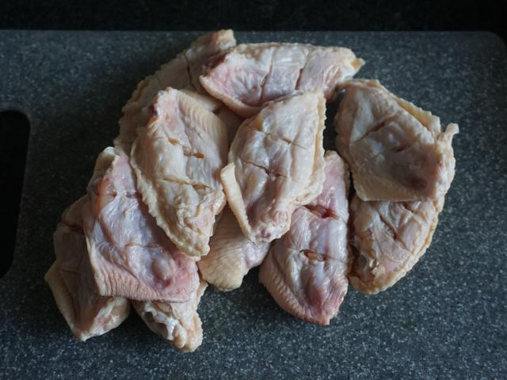
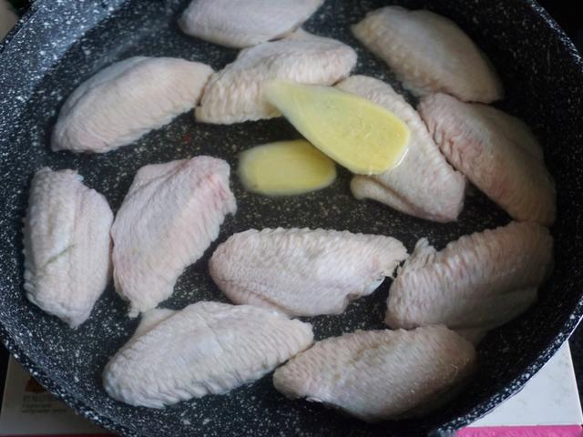
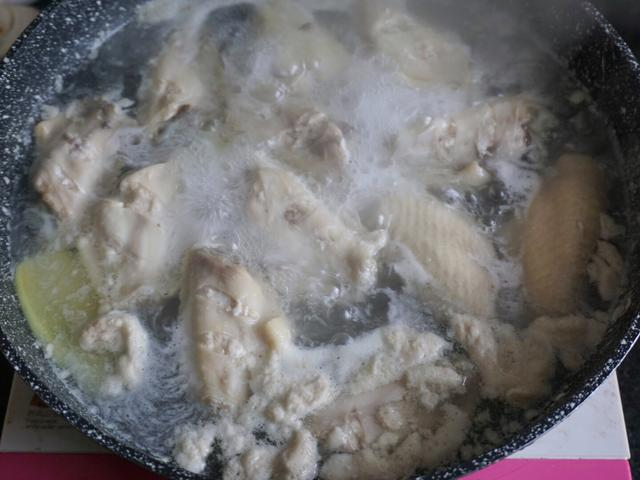
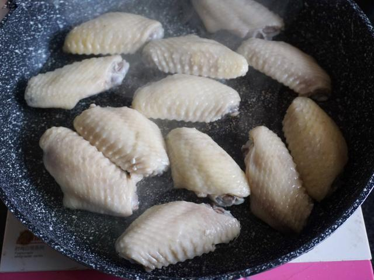
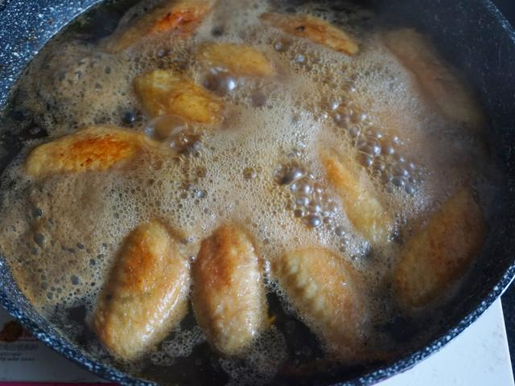
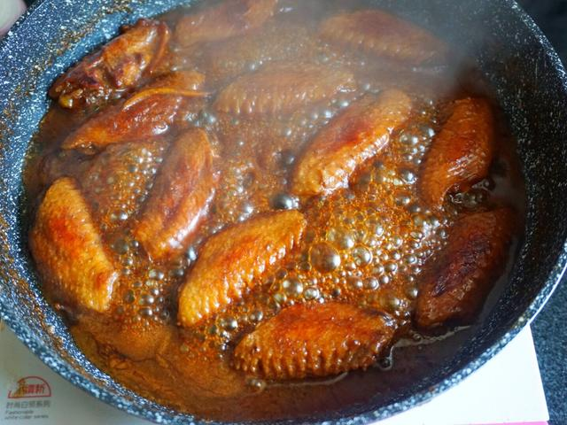
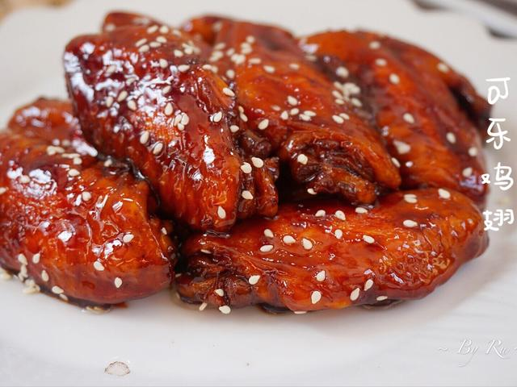

01 · 本课目标
为什么它是“请客菜”？
它看起来需要厨艺，其实步骤只有焯、煎、炖、收四步，每步都能练到一个之前学过的本领。
本课记住一句话：收汁阶段必须站在锅边，用锅铲不停翻动——一旦开始发黏，十几秒内就可能从“刚好”变成“焦糊”。
02 · 用料
买这些就够了
鸡翅选“翅中”，大小均匀的最好；可乐用普通含糖可乐，无糖可乐做出来会寡淡发苦。
芝麻可选 芝麻最后点缀用。
还需要：一口能放下 8 个鸡翅的炒锅、锅盖、夹子或筷子、漏勺。第一次做建议不加老抽，颜色靠煎和可乐就够。
03 · 跟着做
七步，从生肉到红亮鸡翅
前半段可以慢，收汁阶段别走神。看着汤汁从稀到稠，就是“收汁”这堂课。
第一段 · 处理与焯水（约 8 分钟）
-
STEP 处理 · 约 3 分钟
鸡翅洗净，两面各划两刀
鸡翅用流水冲洗干净，厨房纸吸干。在每个鸡翅的正面和背面各轻轻划两刀，方便入味和熟透。
看到这样算对：刀口只到肉的一半，没有把皮完全切断；两面共四道口。

-
STEP 焯水 · 约 4 分钟
冷水下锅焯水
鸡翅放进锅里，加冷水没过，放入姜片和料酒。开中火煮到水开，再煮 2 分钟；捞出用温水冲掉表面浮沫。
看到这样算对：水面上浮起灰白色浮沫；捞出的鸡翅表面干净，没有黏附的血沫。

-
STEP 吸干 · 约 1 分钟
吸干水分再下锅
焯好的鸡翅用厨房纸两面吸干。这一步别省：带水下锅会爆油，也煎不出漂亮的金黄色。
看到这样算对：表面摸起来只是微潮，没有明显水珠。

第二段 · 煎、炖、收（约 22 分钟）
-
STEP 煎制 · 约 5 分钟
中火煎到两面金黄
锅里倒一汤匙油，中火烧到油面有细纹，鸡翅皮朝下排入锅中。先煎 2–3 分钟，能推动再翻面，两面都煎到金黄。
看到这样算对：鸡皮金黄微皱、有焦香，不是惨白的“煮鸡翅”。这一步是后面上色的基础。

-
STEP 炖煮 · 约 15 分钟
倒可乐和生抽，小火加盖炖
倒入可乐没过鸡翅的三分之二，加生抽。大火烧开后撇掉浮沫，转小火，盖上盖子炖 15 分钟。
看到这样算对：锅里一直是小声咕嘟而不是剧烈翻滚；15 分钟后筷子能轻松扎透鸡翅。

-
STEP 收汁 · 3–5 分钟
开盖大火收汁，不停翻动
开盖转大火，用锅铲不停翻动鸡翅，让每只都裹上糖浆色的汤汁。看到汤汁从“能流动”变成“挂在鸡翅上”，立刻关火。
看到这样算对：锅铲划过锅底能留下一条清晰痕迹，汤汁浓稠发亮；颜色是红棕不是黑棕。

-
STEP 装盘 · 1 分钟
装盘，撒芝麻
关火后马上把鸡翅夹到盘里，淋上锅里剩下的汁，撒一点白芝麻或葱花。
看到这样算对：鸡翅红亮、汁挂在表面；夹起一只，汁不会像水一样滴下来。

04 · 翻车急救站
可乐鸡翅翻车点只有一个字：急
收汁阶段最容易出问题，其他步骤都很宽容。
颜色发黑、味道发苦
为什么：收汁时离开锅边，或火太大糖烧焦了。
现在怎么办：立刻关火，把鸡翅夹出来，焦汁不要淋回去；轻微苦味配米饭还能吃，苦味重就只吃翅肉。
下次避免：收汁全程站锅边翻动，看到挂汁就关火。
太甜太腻
为什么：可乐偏多或火太小汤汁没怎么挥发。
现在怎么办：补一勺生抽和半勺醋，大火再收 1 分钟，酸甜会平衡很多。
下次避免：8 个鸡翅配一罐可乐就够，别额外加糖。
汤汁稀稀的，不上色
为什么：收汁时间不够，或鸡翅煎的时候没煎出金黄色。
现在怎么办：继续开大火收 2–3 分钟，注意翻动；如果水汽已经不多，就是火不够大。
下次避免：煎鸡翅时耐心煎到金黄，再进入炖煮。
鸡翅腥味重
为什么：焯水时间不够，或焯完没冲掉浮沫。
现在怎么办：已经炖了就别补救，下次记住“冷水下锅、煮开再煮 2 分钟、温水冲净”。
下次避免：别用热水直接下锅焯，血沫会封在肉里。
05 · 学会标准
怎么算“学会了”？
这道菜能独立完成，你就有了第一道拿得出手的“硬菜”。
-
1
颜色红亮不焦黑 看起来有食欲，不是酱油色或黑糖色。
-
2
汁挂在鸡翅上 夹起来不滴汤，咬一口有甜咸酱香。
-
3
肉熟透但不烂散 筷子能扎透，骨头一抽就干净。
-
4
收汁时心里有数 知道“该关火了”是什么样子，而不是靠运气。